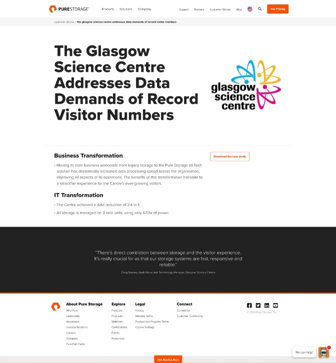
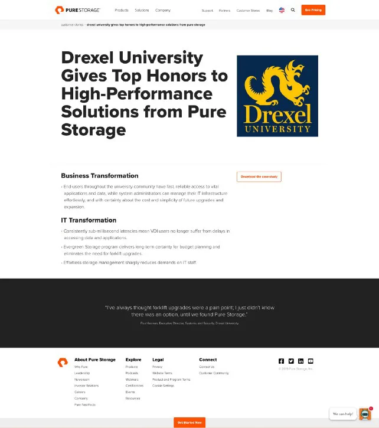
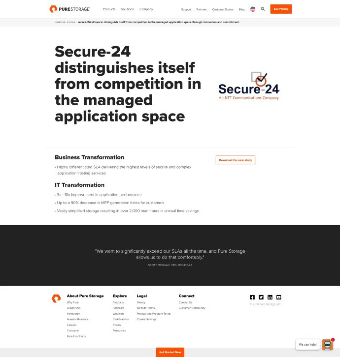
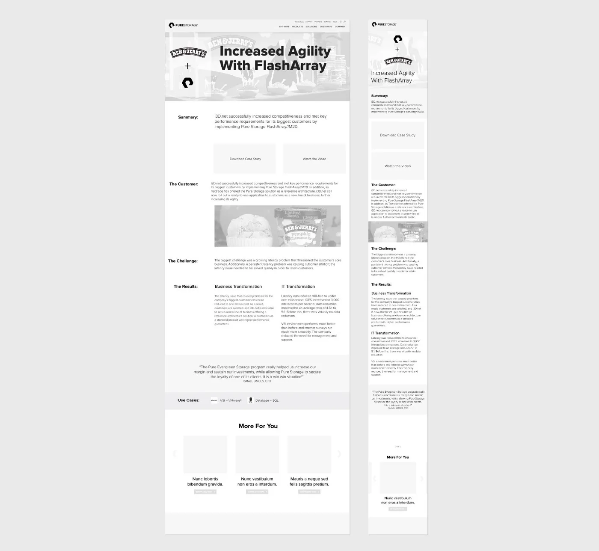
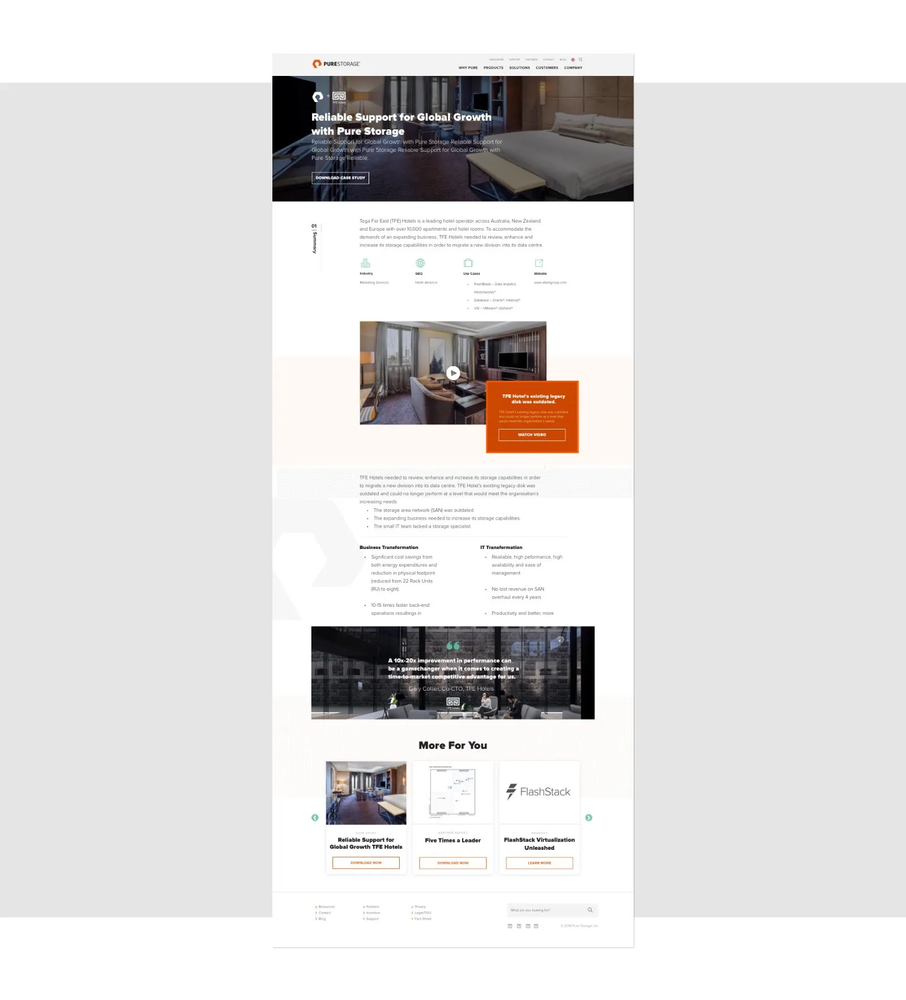

Customer Stories: Pure Storage

screenshots: before and after.
1. Challenge
Rethink how customer success stories are used and presented on Pure’s site.
Pure's customers are very happy. Pure has some phenomenal quotes and success stories from their customers, but they were not showcased on the site in an effective way.
2. Analysis & Research
Pure Storage
Pure ($PSTG) is a multi-billion dollar company that sells enterprise data storage.
The Problem
Pure had over 200 unique Customer Detail pages, and they all looked like this:



The customer team designed a PDF in InDesign through a third-party agency and then posted that online. In order to gather analytics on the PDF, an HTML page was generated that contained a link to the file and one or two bullet points pulled from the content of the file.
This process resulted in some challenges:
• A very large collection of utility pages that did not help Pure’s mission.
Further, users had to download a file to read much about the actual story; this took them away from the site and was generally a bad experience.
• There was a lot of duplicate effort: We were creating PDFs, then creating nearly identical web pages.
• Mobile users had difficulty downloading and viewing PDF content.
• Perhaps the worst of all: These are amazing stories about real people who have real problems that Pure has helped; this was not communicated effectively and is a missed opportunity.
3. Objectives
The objectives then became clear:
1. Create an easier way for users to browse and consume these stories.
2. Clearly communicate the problems being solved, both from technical & business perspectives.
3. Reposition the narrative of these stories to be partnership-focused instead of Pure-focused or even customer-focused.
4. Show just how happy our customers really are; show that they’re real people and really humanize the stories.
5. Elevate the design experience for the brand and the user.
6. Streamline the production process.
4. Execution: Wireframes
I began with the hero component. The two things I wanted to improve here were:
1. Concise Headline
2. Emphasis on the partnership
If users saw both of these and simply wanted the PDF, we would have a link right there; that user's experience could potentially end here.
Beyond that I wanted to provide a more in-depth experience. After researching all the existing Case Studies I opted to include the following:
1. Summary: a concise paragraph summarizing the benefits of the partnership
2. Use-Cases: Specific implementations or subjects relevant to this experience (e.g. healthcare, or SAP or something akin to a category label).
3. Rename: I wanted to make these more personal and appealing. Since we had ‘Use Cases’ in use (see previous point) and after some competitive research I opted to rename these pages to ‘Customer Stories’
4. Customer Description: Brief Overview of who this customer was and what they were trying to achieve
5. Challenge: Briefly described the challenge(s) preventing them from achieving their objective
6. Results: Showcase Business and Technology results, emphasizing that a better IT solution ultimately was a better Business solution
7. Video: Many of the pages had existing videos; via an audit I found that no page had more than one video - as such I wanted a video player that felt tightly-integrated into the site, but that was completely optional, so excluding it wouldn’t affect the layout or story.
8. We had such a plethora of amazing quotes, I wanted to ensure that we validated each Case Study with an actual quote from the customer.

5. Execution: Design
At this time Pure had no web standards and really hadn’t given the site the attention it deserved (again due to resources not talent).
I opted to reference some industry-leading best-in-class sites and try to borrow some interactions and layout; Uber’s design case studies are great so those were referenced - namely the parallaxing box movement, the pinned ‘chapter heading’ indicator, and the use of svg patterns.
I worked with a designer at one of our agencies who I really like; She knew Pure’s brand well and did an amazing job on execution. We worked closely through rounds of feedback, updating and iterating on the wireframes as well as the design. It was a great process and we both felt that it produced successful results.
Imagery
We added imagery; we wanted to add visual texture but wanted to keep the attention on the story and also needed this to scale across hundreds of pages.
Copy
Pure at the time had one single copywriter, who was hired by the stakeholders. The result of this was very verbose titles and descriptions; the justification was keyword stuffing for SEO, but definitely not web-friendly from a user-perspective. On top of that we used ALL-CAPS TITLES, which made the pages very dense and difficult to read.
The fix was simple:
• Character Limits: We employed character counts to ensure the titles were readable. We opted not to limit this in code and just enforce by policy; this allowed for overrides for German and other longer languages.
• Camel-Case: We reduced the <h1> font size and moved to {text-transform: capitalize;} which was a simple change across the site. We also had an override for this - we learned that capitalized letters can sometimes have different meanings in German.
6. Execution: Development
I built the interaction prototypes:
• I used Javascript/CSS/HTML for interaction comps.
• I used After Effects for strictly motion and animation comps.
• I established our usage of svg patterns
• I defined the repeating pattern as an svg <pattern id=”patternA”> element and then filled an svg <rect> that was 100% with #patternA.
• Styling was done in CSS, limited to max 2 colors.
I worked closely with the Dev and Scrum team to define requirements and clarify questions during Sprint Planning & Estimation.
I did working sessions with the devs for motion and timing, and to resolve edge-case scenarios.
There were concessions within the existing component framework that we came up against which required UX & Design changes on the fly.
7. Execution: Scaling the Template
Logos
+240 logo files, all different colors and resolutions. In an effort to unify the presentation of our Customer Stories, I opted to use 1-color svgs of all of our client logos.
Images
The images were primarily used on the Hero and the Quote component.
Source templates were set up for production design at the proper dimensions. For consistent contrast I built out a tool using Javascript (ImageMagick) that would add a dark layer on top of any image in a folder. This worked for the 240 images but for new images we opted for Photoshop as any of our designers could handle the task.
Lastly, we added an image in the <meta> tags for integration with a page scraping service used elsewhere on the site.
8. Results
The results here were positive all-around.
Quantitative:
Time on site increased overall on these pages. Downloads went down slightly, but we can assume that the user was able to glean the info needed by hoisting more content from the PDF into the page.
Qualitative:
We’ve only had positive feedback from our users and stakeholders.
Long-term this effort helps us elevate our most important differentiator, our happy customers’ experience.
